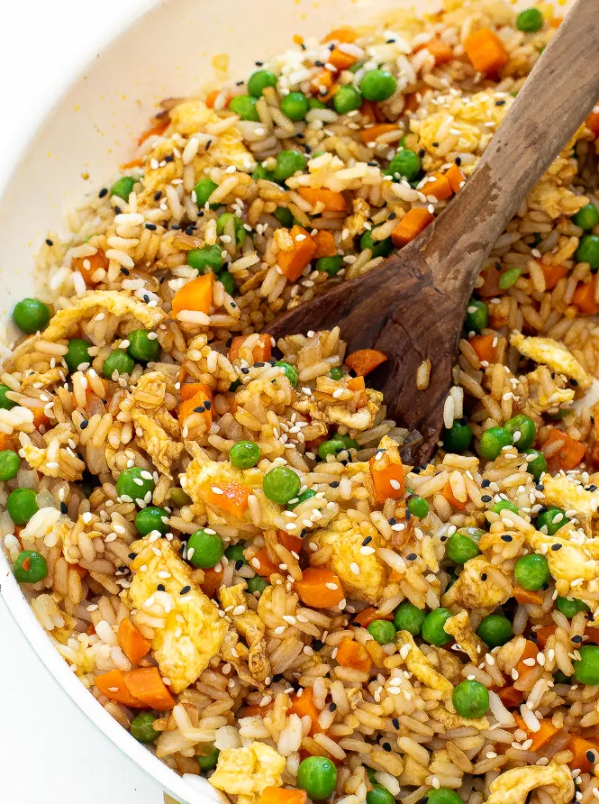

Return Home
Fried Rice

Description
Fried rice is a popular dish made with cooked rice, often combined with eggs, vegetables, and various seasonings. It can be customized with different ingredients and is known for its quick preparation and flavorful taste.
Ingridients
- Garlic: 3 cloves (minced)
- Scallions: 2 medium (thinly sliced, white parts separate from light and dark green parts)
- Vegetable Oil: 2 tablespoons plus 1 teaspoon, divided
- Frozen Peas and Carrots: 1 cup (do not thaw)
- Rice: 4 cups cold cooked brown or white rice (preferably medium grain)
- Soy Sauce: 2 tablespoons or tamari
- Kosher Salt: 1 1/2 teaspoons, plus more as needed
- Ground White Pepper: 3/4 teaspoon, plus more as needed
- Eggs: 2 large (whisked)
- Toasted Sesame Oil: 3/4 teaspoon